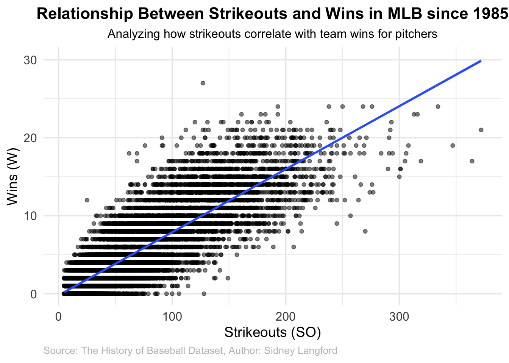
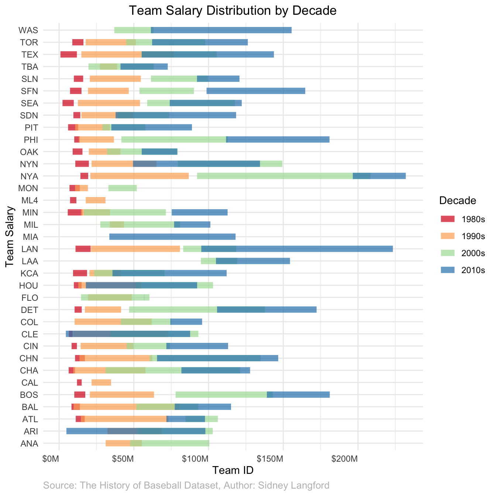

1 Introduction
Report {.unnumbered}
What question are you trying to answer?
- What baseball teams have won the most over time
- What are the trends between winners? (Traits, game stats)
- How do player’s stats affect their salaries?
- Are there any factors affecting their salaries like location and popularity?
- Insights in the history of baseball? What factors are associated with success historically? What is the average age of players and how has that changed historically? Which places/locations most of the stars do come from historically?
Why is it important or interesting?
- Baseball is one of the most popular sports in the US with millions of viewers each year. There are many factors that contribute to team wins and we would like to explore potential factors contributing to these wins.
- Baseball is the most analytical sport in the world, and has a long history of accurately recorded data both simple and complex.
If needed, What background information is necessary here?
- A comprehension of how the game of baseball has evolved over a 144 year period. Here is a brief summary of the basic changes since MLB’s inception. https://blastmotion.com/blog/evolution-of-sport-baseball/?srsltid=AfmBOooVC-YIx4L9Jc6uylHY6jQFwAok4YbATH4AUn0Qp9lL8C6-U1ji#gref
- Knowledge of the rules of baseball are necessary to understand this data. An explanation of the rules can be found here: https://en.wikipedia.org/wiki/Baseball_rules
Baseball is one of the most popular sports in the US with millions of viewers each year. There are many factors that contribute to team wins and we would like to explore potential factors contributing to these wins. With this popularity comes a plethora of interesting data, from batting averages to different measures of success in the field to All-Star players per team. Using this data going as far back as the 1870s, we decided to look into what factors can predict team wins over time. With billions of dollars pouring into the MLB (Major League Baseball) each year, finding potential predictors of which teams will win is quite literally a billion dollar question. Throughout this report, we will explore different relationships between the variable wins and several predictor variables.
In order to best understand this report, a few terms must be clarified. Firstly, wins refer to the number of games won by a team, while losses refers to the number of games lost by a team. A strikeout is when the pitcher throws three strikes, valid pitches that the batter does not hit, causing the batter to be out and finished with their batting turn. Finally, batting average is a decimal value representing the number of successful hits made by a single batter divided by their total number of hitting attempts.
This data was acquired from Kaggle. This data set, titled ‘The History of Baseball’ is a reformatted version of a famous data set by Sean Lahman. This data, originally published in the 1990s was the first of its kind, making raw baseball data accessible to the public. This data was most recently updated for the 2015 season, and contains data between 2015 and 1871. Lahman’s data set is actually a collection of several data sets, ranging from pitching data, to data on team managers. For our analysis, we focus on the pitching and batting data sets, which contain information on wins, losses, pitching stats, batting stats, and salary information per player per year. In order to complete our analysis, we have joined the batting and pitching data sets together, added a new variable batting_avg, and cleaned the variable names. The variables are a mix between categorical (player names, team names, etc) and quantitative (wins, losses, batting average, etc).
1.0.1 Looking at Wins vs Losses
!!!!!!!ADD AN INTRO/TRANSITIONAL SECTION EXPLAINING WHAT THIS PLOT IS!!!!!!!
Looking at this visualization of baseball team performance in the 2000s, several interesting patterns emerge. The data reveals a generally competitive era in baseball, with most teams maintaining relatively balanced win-loss ratios. BRK1 stands out as a particularly successful team with around 50 wins and comparatively fewer losses, while teams like BL1 and BSN show more evenly matched records. Intriguingly, there’s significant variation in the total number of games played across teams, with the WS3-WS6 teams consistently showing lower game counts, possibly indicating partial seasons or specific competition subsets. The similar patterns between teams with related names (like CL1 and CL2) suggest potential franchise relationships or organizational changes during this period. Overall, the data paints a picture of a competitive baseball landscape in the 2000s, where extreme dominance or poor performance was rare, and most teams maintained relatively stable performance levels.
1.0.2 The Relationship Between Strikeouts and Wins
!!!!!!!ADD AN INTRO/TRANSITIONAL SECTION EXPLAINING WHAT THIS PLOT IS!!!!!!!

The scatter plot analyzing the relationship between strikeouts and wins in baseball since 1985 reveals several fascinating patterns. A clear positive correlation exists, as indicated by the blue trend line, showing that pitchers who record more strikeouts generally secure more wins. The data displays distinct horizontal banding, reflecting the discrete nature of baseball wins, with most pitchers recording between 50-250 strikeouts and winning between 0-25 games per season. Notably, while the relationship between strikeouts and wins is strong, the increasing spread of data points at higher strikeout counts suggests that other factors also influence a pitcher’s win total. Some remarkable outliers exist, particularly among pitchers with 300+ strikeouts, highlighting exceptional performances that deviate from the typical pattern. This visualization effectively demonstrates that while strikeout ability is a good predictor of winning games, it’s not the only factor determining a pitcher’s success.
1.0.3 Team Salary Distribution by Decade
!!!!!!!ADD AN INTRO/TRANSITIONAL SECTION EXPLAINING WHAT THIS PLOT IS!!!!!!!

DESCRIPTION/ANALYSIS OF VIZ
1.0.4 Conclusion/Big Picture
How do the insights connect to answer your research question?
What improvements might someone make to your analysis?
Are there any limitations or weaknesses of your data / analysis?